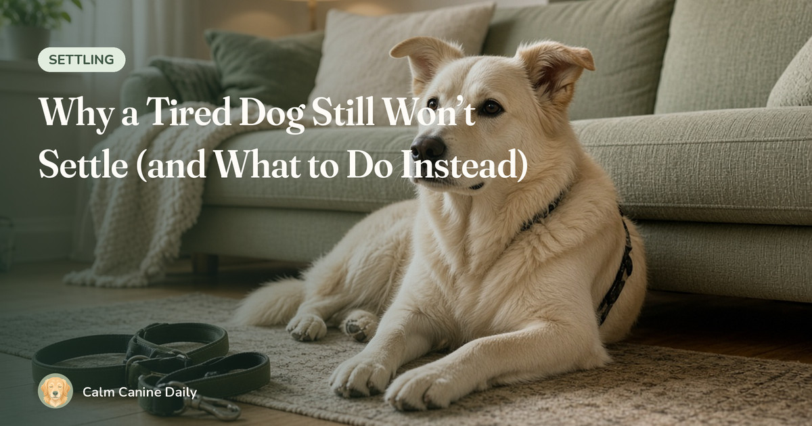

Why a Tired Dog Still Won’t Settle (and What to Do Instead)

A tired dog won’t settle just because the walk was long. A tired body is not the same thing as a settled mind. You can come back from a long walk and still have a dog pacing, mouthing, or bouncing off the furniture.
That is frustrating, and it is also common. Exercise is valuable. It is not the only skill a restless dog needs. A short settle practice, and a brief job for the brain, teach something a second mile often cannot: how to come down.
Educational content only. Some links on this page are affiliate links. If you purchase through one, we may earn a commission at no extra cost to you. We do not impersonate or speak for any course creator.
About this article. Educational tips from Calm Canine Daily for everyday US owners. This is not veterinary advice, a diagnosis, or a guaranteed result. We are not a certified training practice and we do not claim CPDT or DVM credentials. If you are worried about a bite risk or a situation you cannot manage safely, pause and get qualified in-person help.
Key takeaways
- More walking does not automatically equal more calm. Arousal can stay high after exercise.
- Teach a mat settle in a quiet room first, then use it when the house is a little busier.
- Short sniffing or search games can take the edge off — then offer a rest, not another round of excitement.
- Keep games winnable. If your dog gets stuck or frantic, make the puzzle easier and stop sooner.
In this article
- Why a long walk can still leave them buzzing
- What not to do
- The five-minute mat settle
- Give the brain a job
- Then offer a rest
- When to get extra help
- FAQ
Why a long walk can still leave them buzzing
Physical exercise spends energy. It can also raise arousal: new smells, other dogs, traffic, a game of fetch that ends with a dog still buzzing. If you come home and the next event is a chaotic greeting or a noisy house, that arousal has nowhere to go except around your kitchen.
Settling is a trained skill. It is the ability to park on a mat, a bed, or a crate that already feels safe, and to be paid for staying there while the room is ordinary. Some dogs do this naturally in small doses. Many need it taught in easy pieces.
This article is not a diagnosis of anxiety, and it is not a claim that your dog has a medical problem. If restlessness is sudden, extreme, or paired with other signs of discomfort, see your veterinarian. For everyday “they still won’t lie down after the walk,” start with the settle and a short sniffing job.
What not to do
Don’t immediately add another mile as the only plan. If the last walk ended in a zoom, a longer one can become another rehearsal of high arousal.
Don’t scold a dog for not “calming down.” They are not being stubborn. They may not have a clear off-switch in that room yet, and scolding adds noise.
Don’t skip rest in favor of endless games. Fetch, tug, and hard puzzles are useful, and they still need an ending. The ending is the point.
Don’t force a down-stay and hover. This is not about pinning a dog into a formal position. It is about making a mat a place that pays for stillness.
The five-minute mat settle
This is Day 1 of the free checklist. Use a mat, a towel, or a bed you can move.
- Place the mat in a quiet room, a few steps off the busiest path in the house.
- Toss two or three treats onto it so your dog steps on willingly. You are inviting, not lifting them into place.
- While they stay, slowly drop treats between their paws. If they lie down, quietly slow the treat rhythm a little — lying down just became a better deal.
- If they wander off, wait. Reward the moment they return. Don’t scold the exit.
- End after about five minutes, or sooner if that is a stretch, while it is still going well. If five minutes feels like a lot, start with 30 to 60 seconds.
Do this once a day in the easy room. Later, try it when the house is a little busier, or after a walk, when you actually need the skill. After a walk, give them a drink of water and a moment to pant, then invite them to the mat. You are not asking for a performance. You are offering a landing place.
Give the brain a job
If the body is tired and the brain is still hunting for work, give it a short, winnable job. Five to ten minutes is plenty.
- Scatter feeding. Toss a portion of kibble or treats into the grass or across a towel and let your dog sniff it out.
- Towel roll. Wrap a few treats in a towel and let them unroll it. Start loosely so the game is easy to win.
- Find it. Hide a toy or a treat in an obvious place, say “find it,” and celebrate. Make hides harder only after easy wins.
These are the same ideas as Day 7 of the checklist. You do not have to wait until day seven to use them. If your dog gets frantic, rips at the towel, or cannot think, the game is too hard or too long. Make it easier and stop sooner.
A puzzle toy can be part of this — see our puzzle-toy guide. The principle is the same whether the puzzle is a folded towel or a store-bought feeder: sniffing and light problem-solving, not frustration.
Then offer a rest
After the game, show your dog what happens next: the mat, a comfortable crate if that is already a happy place, or a quiet chew. Lights a little lower, voice a little lower. You are closing the loop so the brain job does not spill into another hour of pacing.
If they cannot rest, the game may have been too spicy, or they may need a quieter room. Shrink the setup. Success is a dog who can lie down, even briefly, not a dog who “should be tired by now.”
When to get extra help
See a veterinarian if the restlessness is new, if your dog seems uncomfortable, or if they cannot settle in any context, including at night.
If your dog panics when you step away, or if you are wondering about separation-related distress, do not guess from a blog post. That is a different problem than “they’re buzzing after a walk,” and it deserves qualified help. We can write about teaching a dog to be a little more independent in another article; we will not diagnose it here.
FAQ
How much exercise does my dog need?
There is no honest one-number answer that fits every age, breed, and body. Watch your dog: if more running is making evenings wilder, add a settle and a sniffing job before you add another loop around the block. Ask your vet if you are unsure what is reasonable for this dog.
Can I use the crate for the settle?
Yes, if the crate is already a comfortable place and you are not using it as a timeout or a punishment. If the crate has become a sour place, start with a mat instead. (A later article will cover the “crate as timeout” mistake.)
What if they just want to play more?
End while you can still win. A short game that finishes with a chew on the mat is better than a long game that ends in frustration.
Will a paid program do this for me?
No program can replace the daily settle or a check with your vet. A structured set of games can be a useful add-on for some households, which is why we mention one option above, with a disclosure.